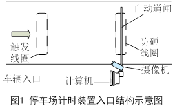
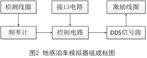
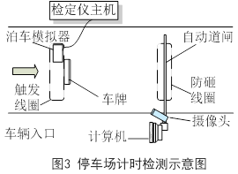

地感触发车牌识别停车计时装置的计时原理及检定方法
山西 阳泉市质量技术监督检验测试所 葛 君
河南 郑州市先达电子技术有限公司 郜大华
浙江 绍兴市质量技术监督检测院 陈 文
一、引言
JJG 1010-2013《电子停车计时收费表》检测规程发布实施后，我们采用了XDJ-5电子计时装置检定仪对咪表和停车场的计时收费表（或装置）的计时进行了检测。这种收费表一般在路边或停车场的出入口，有固定式和手持式。收费载体有磁卡、接触式IC卡、射频IC卡和纸制条码等。检定仪通过同步刷卡传感器器和射频控制器，实现了检定仪和计时收费表的同步启动和同步停止。
随着城市智能交通的发展，停车场的计时收费置也呈现出了新的模式，即车牌拍照识别模式。目前市场上安装的比较多的是基于地感线圈触发的车牌识别停车计时收费装置。
本文首先对这种新的计时装置进行分析，然后提出了基于地感泊车模拟器的同步计时检测方法，这种首次提出的检测方法非常新颖、科学和实用。
二、地感触发车牌识别停车计时装置的计时原理
1.地感车辆检测器原理
地感车辆检测器也称环形线圈 车辆检测器。有二部分组成，一部分是埋在路面下的金属线圈(如长2m,宽1m)；另一部分是检测器，二者通过馈线相连。通电后，这二部分构成LC振荡电路，输出信号的频率为f0。当由金属部件构成的车辆停在地感线圈上时，由于电磁感应原理，车辆要产生涡流，这个涡流反过来会影响原来的LC振荡电路，输出信号频率就会变化到f1。汽车驶离，振荡频率又回到f0。根据振荡频率的改变，就可以检测汽车是停在地感线圈之上或者通过地感线圈。
2.车牌识别计时收费系统工作过程
（1）在停车场入口

当汽车进入触发地感线圈范围时，停车系统一体化摄像机就会被触发拍照，系统识别出车牌号后，记录车牌号和入场时刻等信息，道闸杆自动抬起。车辆经过线圈防砸线圈后，道闸杆自动落下,车辆进入停车场内停车。（2）在停车场出口
当车辆进入触发线圈区域时，停车系统摄像机就会被触发而拍照，系统识别出车牌号后，比对入场车辆信息,记录出场时刻，根据出场入场时刻差，得到停车计时时长，然后提示收费。收费后,道闸杆抬起，车辆通过防砸线圈后，离开停车场,道闸杆落下。
三、 计时测试方法和测试过程
对停车计时收费装置的计时测试的关键问题如下：（1）检定仪计时准确；（2）检定仪和这个计时收费装置同步计时（即同时启动和同时停止）；（3）检测方法绿色环保；（4）检测效率要高。
检定仪计时的准确性可以上级部门的检测或校准证书来保证。
实际开车过去，掐秒表的方法显然不符合上面要求的（2）（3）（4）点。为此我们首次提出了地感泊车模拟器的思想，并研发了泊车模拟器，在此基础之上，开展了对地感触发车牌识别停车计时装置的计时测试。
1. 地感泊车模拟器工作原理
地感泊车模拟器（以下简称泊车模拟器）, 它放置于车检器的地感线圈内，用来模拟实际经过或停在它上面的汽车，组成框图见图2。

泊车模拟器由检测线圈、频率计、控制电路、直接数字频率合成（DDS）信号源（含驱动）、激励线圈和控制电路六部分组成。通过接口电路与检定仪以电缆线或无线方式相连。泊车模拟器放在车位后，会通过检测线圈和频率计自动测量车检器中地感线圈的振荡频率。当检定仪发出开始模拟的控制信号后，泊车模拟器的DDS信号源发出相应频率的信号，并驱动激励线圈。由于电磁感应原理，车辆检测器的地感线圈受到影响,振荡频率就会发生改变，车检器就会认为(或检测到)有车辆存在,当然实际上是泊车模拟器在工作。
2. 计时收费装置计时检测所用设备
对于停车场车牌识别系统计时的检测,可以采用基于泊车模拟器的检测方法。检测时必需的三种设备：
(1)XDJ-5电子计时装置检定仪，它作为主设备，控制泊车模拟器，并进行准确计时；
(2)地感泊车模拟器，配合检定仪，触发车检器的地感线圈，从而实现检定仪和停车计时装置同步启动计时，同步停止。
(3)车辆车牌和车牌支撑架，检测必须的辅助设备。
下面我们通过详细的检测过程来说明其计时检测原理。
3. 任意时间间隔检测

入口处操作流程
①如图3，检测人员封闭车道，暂停其它车辆进入。
②连接主机与模拟器,将模拟器放置在车辆检测地感线圈内部,并开启电源。
③在地感线圈和摄像头之间放置一个车牌。
④主机上电，进入“计时误差检测”菜单，按启动计时键,启动仪器第1道计时，同时泊车模拟器工作，触发停车系统摄像头拍照，图像经一体化摄像机处理后，识别出车牌号，记录入场时刻，道闸杆自动抬起。
⑤可将模拟器放在防砸线圈上，在其它计时通道上进行一次模拟, 道闸杆自动下落。或者停车收费人员操作相关软件按钮，使道闸杆下落。
⑥收好仪器，开启车道，允许其它车辆进入。
⑦将仪器移至出口处，等待。
（2）出口处操作流程
①封闭车道。
②将模拟器放在地触发线圈区域内，与主机连接好，开启模拟器电源,并放置同一个号码的车牌。
③在检定仪上按停止计时键，仪器再次泊车模拟，并停止计时。停车场收费系统检测到车辆，拍照并识别到车牌号后，与入口车辆信息比对，记录一个停止时刻，据此得出计时时长t1，并给出收费金额。
④记录计时收费装置的计时时长t1和检定仪的计时t0，收好仪器，开启车道，允许其它车辆出场。
最后得到,计时收费装置的计时误差为t1-t0。
4.计时检测误差来源分析
（1）检定仪计时误差：
（2）检定仪和泊车模拟器通过有线联接，检定仪开始或停止计时，模拟器开始模拟，其时间滞后在ms级，所以这个滞后就不用考虑了。
（3）查阅国内典型的地感触发车牌识别停车计时装置说明书可知，车辆进场和出场时收费系统的处理时长通常都小于1s(对计时误差没有贡献)，而二者之差对计时误差有很小贡献。
（4）计时收费装置计时t1本身误差主要来自：入场时钟误差，出场时钟误差以及二者的时刻同步误差。
从以上分析可知,计时收费装置计时误差为t1-t0,而误差主要来源为计时收费装置本身误差t1。
以上给出了收费装置任意时间间隔的检测,而依据规程要求，一般检测要在一些关键时间点（如免费时间点和计时单元时间点）上进行，而我们所提出的这个方法也能很好的满足，下面来详细叙述定时间点的检定。
4.固定时间间隔检测
（1）检定仪主机进入“标准时间间隔”菜单。选择时间点（如30分钟），其余入口操作同第3条操作。
（2）在时间点到达前几分钟，封闭出口车道。其操作基本与第3条操作基本相同，所不同的是无需按停止键，到30分钟（t0）时，仪器进行泊车模拟，自动停止计时。
收费装置的计时时长为t1,所以计时误差为t1-t0。
5.二个以上时间点的检测
主机二个计时通道同时工作，配合泊车模拟器，可同时检测二个时间点。比如放置第一个车牌，用第1通道定时20分钟。放置第2个车牌（号码与第一个不同），用第2个通道定时60分钟。
多个车牌和多个通道联合工作，配合泊车模拟器，可在同一时间段内检测多个时间点。
四、结论
通过分析地感触发车牌识别停车计时收费装置的计时原理，我们首次提出了基于地感泊车模拟器的同步计时检测方法。通过自主研发的泊车模拟器，我们对停车场计时收费装置的计时进行了检测，达到了预想的效果，验证了我们的设想。
我们的检测方法不用实际车辆，是一种绿色环保的检测方法。采用多个车牌和检定仪的多通道计时功能，配合泊车模拟器，可在同一时间段内检测多个时间点，说明本检测方法又是一个高效的检测方法。目前该方法已在全国多个计量部门推广，产生了明显的经济效益和社会效益。
本文发表于《大众标准化》2018年第1期 。